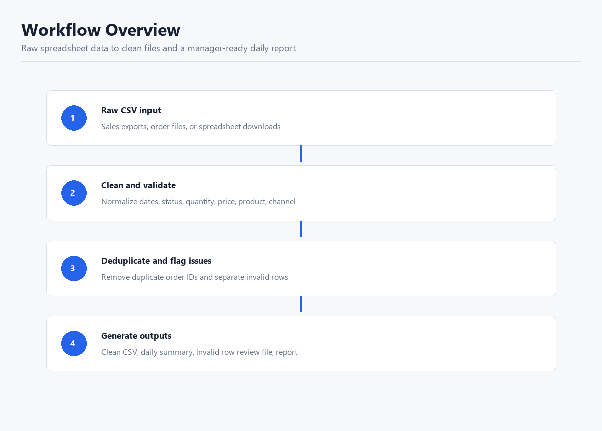
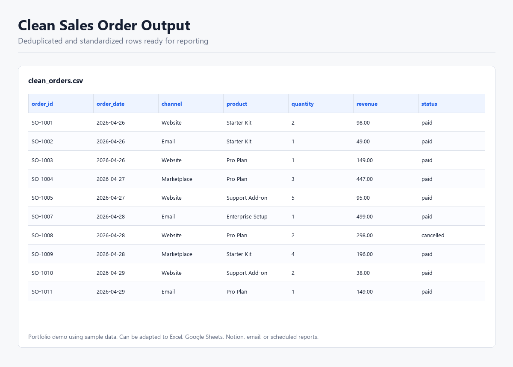
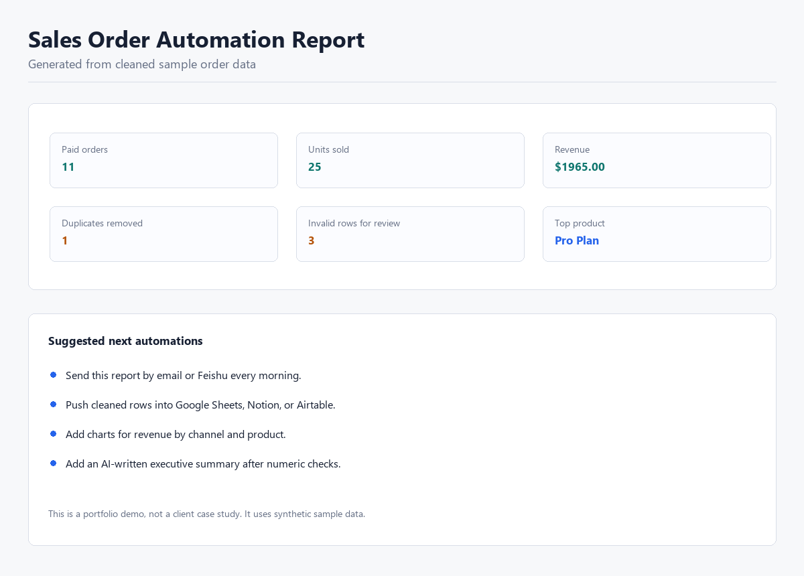

表格和报表自动化
清洗、合并、去重、格式化 Excel/CSV/Google Sheets，生成日报、周报或可复用脚本。
起步：500-1500 元 / USD 80-200
AI Automation / Spreadsheet Workflow / SOP
我帮小团队把重复的表格、报表、文档、摘要和知识库问答流程做成可运行 MVP。 第一版只解决一个清楚流程：一个输入源、一个输出格式、一个可验收结果。
适合的第一单
清洗、合并、去重、格式化 Excel/CSV/Google Sheets，生成日报、周报或可复用脚本。
起步：500-1500 元 / USD 80-200
把零散 Prompt、AI 测试结果、内部流程整理成 SOP、提示词库和交接文档。
起步：800-2500 元 / USD 120-350
基于 FAQ、文档、网页或表格做一个小型知识库问答原型，包含兜底和测试问题。
起步：1000-3000 元 / USD 150-500
这是样例数据 Demo，不是真实客户案例。它展示如何把原始销售订单 CSV 清洗、去重、标记异常行， 再生成渠道日报和管理者可读报告。



当前人工流程、一个样例输入、一个期望输出、运行频率、预算范围。